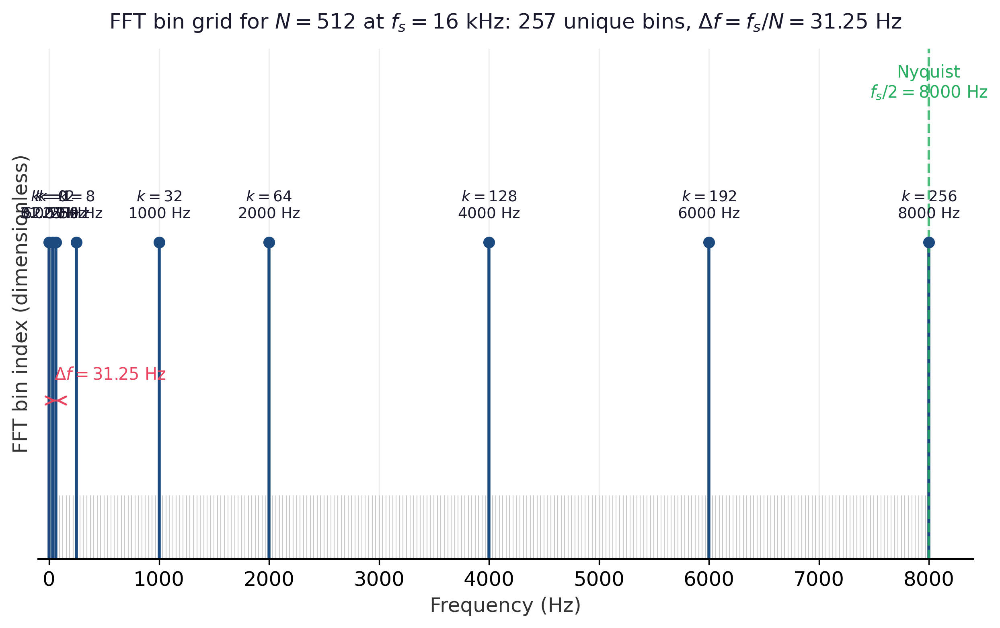

Once a signal has been sampled and split into frames (Section G.1), each frame is converted to a frequency-domain representation by the discrete Fourier transform (DFT). The DFT is, in a precise sense, a change of basis: it expresses the $N$-sample frame as a sum of $N$ complex exponentials, each oscillating at a fixed rate. Because complex exponentials are the eigenfunctions of every linear time-invariant operator, the DFT is the canonical representation in which filtering, convolution, and resonance all become pointwise multiplication.
Definition
For a length-$N$ sequence $x[0], x[1], \ldots, x[N-1]$, the DFT produces $N$ complex coefficients
The inverse DFT recovers the time samples by reversing the sign in the exponent and dividing by $N$:
(Different conventions split the $1/N$ between forward and inverse transforms; only the product matters, and many DSP libraries use the convention shown here, while NumPy's np.fft puts the entire factor on the inverse.) The coefficient $X[0]$ is the DC component, equal to the sum of the samples; for a zero-mean audio frame it is close to zero. For a real-valued signal, $X[N - k] = \overline{X[k]}$, so the upper half of the spectrum is redundant and only the first $N/2 + 1$ bins carry independent information.
What Each Bin Means
Bin index $k$ corresponds to the physical frequency
The frequency resolution is therefore $\Delta f = f_s / N$ hertz per bin, and the highest representable frequency is the Nyquist limit $f_{N/2} = f_s / 2$ (Section G.1). At $f_s = 16{,}000$ Hz and $N = 400$, the bin spacing is 40 Hz; padding to $N_{\text{FFT}} = 512$ before transforming gives a finer 31.25 Hz grid, but the underlying resolvable spacing is still set by the unpadded frame length. Figure G.2.1 lays the padded grid out explicitly: 257 unique bins for a 512-point FFT, spaced 31.25 Hz apart, stopping at the Nyquist limit of 8 kHz.

Frequency resolution and time resolution trade off directly. Longer frames yield finer frequency bins but blur temporal events; shorter frames preserve onsets and transients but smear spectral peaks. This is a hard limit, sometimes called the time-frequency uncertainty principle, and it is the reason any one spectrogram is a compromise.
Take the tiny length-4 signal $x = [1, 0, -1, 0]$, sampled at some rate $f_s$. The bin-$k$ DFT coefficient is $X[k] = \sum_{n=0}^{3} x[n] \, e^{-j 2 \pi k n / 4}$. Bin 1 picks out the component oscillating once per frame, that is, at $f_1 = f_s / 4$:
So $|X[1]| = 2$, the largest of any bin, which correctly reports that the signal is a pure cosine at frequency $f_s / 4$ (one full period in four samples). The other bins evaluate to $X[0] = 0$ (no DC), $X[2] = 0$ (no Nyquist tone), and $X[3] = \overline{X[1]} = 2$ (the mirror of bin 1, redundant for a real signal). Every bin in a 512-point FFT is computed by the same formula; only the bookkeeping is heavier.
Why the FFT Is $O(N \log N)$, Not $O(N^2)$
Computing the DFT directly from its definition costs $N$ multiplications per bin times $N$ bins, that is, $O(N^2)$. The fast Fourier transform (FFT), in its Cooley-Tukey form, exploits the fact that an $N$-point DFT can be expressed as two interleaved $N/2$-point DFTs (one over the even-indexed samples and one over the odd-indexed samples) plus $N$ "twiddle" multiplications and additions. Recursing on this decomposition gives the recurrence $T(N) = 2 T(N/2) + O(N)$, which solves to $T(N) = O(N \log N)$. For a 512-point frame this is about a 50x speedup over the direct sum; for the kind of $N = 2^{14}$ frames used in music analysis it is more than a thousand-fold. The FFT requires $N$ to be highly composite (a power of two is the easiest case), which is why audio pipelines zero-pad to the next power of two before transforming.
The Short-Time Fourier Transform
Applying a DFT independently to each windowed, hopped frame of a long signal gives the short-time Fourier transform (STFT):
where $m$ indexes the frame, $H$ is the hop length, and $w[n]$ is the analysis window from Section G.1. The output $X[m, k]$ is a 2D complex array of shape $(\text{num\_frames}, N/2 + 1)$ called a spectrogram when its magnitude is plotted on a time-frequency grid. The STFT is the workhorse representation behind nearly every audio model in the book.
Magnitude vs. Phase: Why Audio ML Drops Phase
Each STFT coefficient $X[m, k] = |X[m, k]| \, e^{j \angle X[m, k]}$ decomposes into a non-negative magnitude and a phase angle. For perception and for most discriminative audio tasks (speech recognition, speaker identification, music tagging), magnitude carries almost all the relevant information; phase information is heavily redundant with magnitude in natural signals and is dominated by uninformative shifts. The standard input to discriminative audio models is therefore $|X[m, k]|^2$ (the power spectrogram) or its mel-warped, log-compressed cousin (Section G.3). Phase becomes essential again only when the model must synthesize audio, where dedicated vocoders (Griffin-Lim, HiFi-GAN, EnCodec) are responsible for reconstructing it from a magnitude representation.
The STFT defined here is the immediate input to the mel filter bank covered in Section G.3, and the resulting mel spectrogram is what Whisper, AudioLM, and the other models in Section 20.5 actually consume. Phase reconstruction comes back in the neural-vocoder discussion of Section 20.0.1 (Audio Data).
The DFT is a change of basis from $N$ time samples to $N$ complex sinusoid amplitudes at frequencies $f_k = k f_s / N$, the FFT computes it in $O(N \log N)$ when $N$ is a power of two, and the STFT applies one DFT per windowed frame to produce the time-frequency tensor every audio model in this book ingests. Audio ML keeps only the magnitude and lets a vocoder reconstruct phase when synthesis is needed.
Objective. Build intuition for the time-frequency uncertainty principle by computing the STFT of a known signal.
Task. Synthesize a 2-second signal at $f_s = 16{,}000$ that contains two summed sinusoids at 440 Hz and 460 Hz. Compute librosa.stft(y, n_fft=N, hop_length=N//4) for $N \in \{256, 1024, 4096\}$. For each, plot the log-magnitude spectrogram and report whether the two tones are resolvable in the frequency axis. Compute $\Delta f = f_s / N$ for each and tie the visual result back to the formula.
Stretch. Add a single 50 ms click at $t = 1.0\ \text{s}$. Plot all three spectrograms again and note how time localization of the click degrades as $N$ grows. This is the time-frequency uncertainty principle in action.
Further Reading
DFT and FFT
torch.fft.rfft call.Modern Implementations
torch.fft and torch.stft documentation." pytorch.org/docs/stable/fft.html. Official documentation for the FFT and STFT primitives used in the running PyTorch examples.